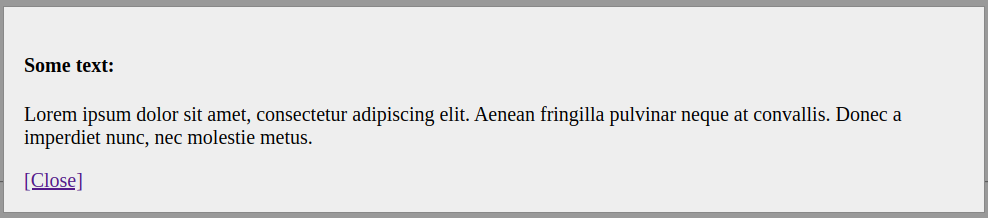
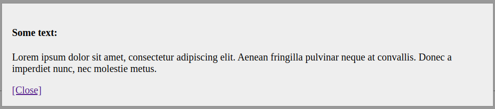

DRY in Angular Templates: Content Projection im Praxiseinsatz
Martin Grotz
TODO: MATHEMA Logo, Code Days Logo
Einschränkungen
- Angular 4 bis Angular 9
- Strukturen vom Beginn
- Keine Angular-Formulare
- Feste Browser-Version
- Performance wichtiger als schöner Code
Angular
- Framework
- Webtechnologien
- Komponentenorientiert
- Dependency Injection
- Automatische Change Detection
ng-content
 



Lifecycle Reihenfolge

Verschachtelte Komponenten
Problem: 2x projizieren nicht möglich, weil ausgeschnitten
Problem: Direktive oben soll Style innen beeinflussen -> style
encapsulation funkt dazwischen, :host-content
Problem: Injector Tree - Zugriff in projizierter Komponente auf
Wrapper nicht möglich
ng-template einfaches Beispiel: Liste mit Array als Input und n
Einträgen
ngTemplateOutlet context implicit/explicit
Lifecycle & Reihenfolge innen/außen
ViewChildren, QueryList Probleme
Verschiedene Templates mit Direktive/anhand Property
Problem: Style-Encapsulation
Problem: Injector Tree - Zugriff in projizierter Komponente auf
Wrapper nicht möglich
Performance: trackBy, Komponenten-Recycling, Aufbau/Abbau teuer
TODO: Screenshot flamechart aus echtem Projekt